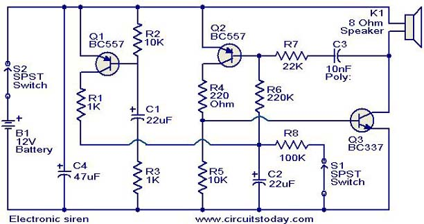
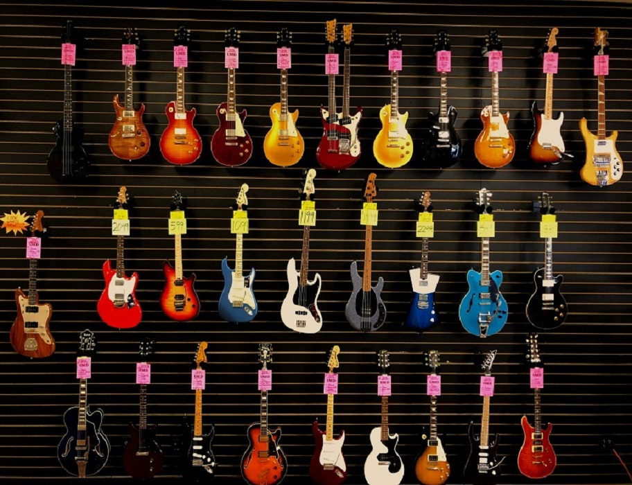
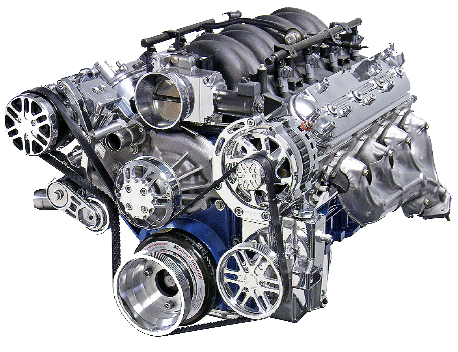
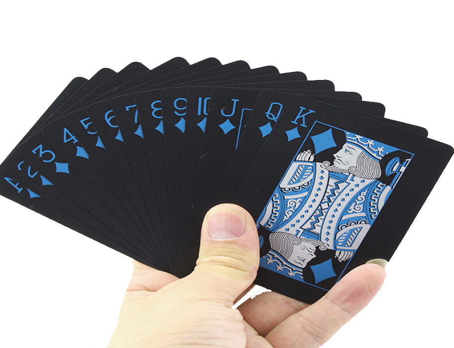
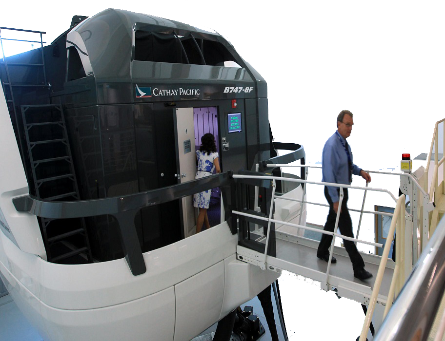

- 🏡Home🏡
- 👨🎓Schools👨🎓
- 💼Career💼
- 📈CV📉
- 🛩️Flying✈️
- ☎️Contact Me☎️
- 📜Various📜
My Interests!🛩️
My Interests & Hobbies

I always had an interest in all sorts of electronics especially audio & electronic Circuits 
A typical Schematic circuit diagram in general. One of my top projects was building an FM radio inside a Tic Tac box & could see all the components & it Worked!. I was fortunate, cause a lot of the people I worked with were electonics enthusiasts, & so I learnt a lot from them. Another one of my favourite projects was building a digital clock with Click--> 'Nixie' tubes.
Taught myself to play guitar. Pretty easy instrument to play once you have mastered the chords, & even better if you have long fingers to wrap around the neck.
Had a beautiful 1950's Fender Stratocaster & really looked after it, but it was stolen from me!
I started collecting stamps around the age of 8, & a few friends did the same thing, so we would swap or trade them. I still have both my albums with me today & while probably not worth a lot of money, it's nice to look back at what I collected.
Another interest I had was engines. This meant any engine, whether it was a car, motor bike, airplane, diesel, gas turbine or whatever type it was. I spent many hours stripping down my car's engines, then rebuilding them. This led to learning about other mechanical parts of the car like brakes, water pump, fuel pump, gear box & so on. This was a valuable asset to me, & it saved me a lot of money, bypassing the garage, whenever I had a problem.
Although I'm not very good at it, another hobby I had was "Card Magic". I've got quite a few tricks "Up my sleeve" 😂 Get it!! Spot the pun!. I still practice now & again, & watch a lot of YouTube videos & try & figure out how its done. Also other tricks, like using elastic bands, & coins. Coin tricks I'm really bad at, so I gave up.
When I was living in Hong Kong, I went to see David Copperfield & what a terrific show that was. He makes whole aeroplanes disappear & can make Tigers appear from nowhere.
Ever since I can remember, I've had this fascination with anything mechanical. I would travel to airports whether they were close by or many miles away, just to see the planes taking off & landing.
I was lucky enough to have the oportunity to take flying lessons (1980) at Click-->"Stapleford Abbotts" flying club in Epping forest. To obtain a Private Pilots Licence (PPL), you have to complete 40 hours of flying within a 6 month period, otherwise 45 hours over 6 months. This includes 10 hours of solo flying to at least 2 other airfields & a minimum of 150 nautical miles.
Apart from the flying hours, there is an enormous amount of ground work & lectures with your flight instructor like Air Law, Principles of flight, Operational procedures, Aeroframes & Engines, Meterology, Radiotelephony Operators Licence which is essential for communicating with Air Traffic Control. Flight Performance & Navigation. To cram all of this into 6 months & working at the same time is hard work. Night rating & twin engine are more hours & more studying. The actual flying test with the chief flying instructor is really nerve racking to say the least. You have to satisfy him/her in displaying your flying skills. During pre-flight preparation, you need to determine power settings and speeds, and calculate performance data for take-off, landing and approach in compliance with the operations or flight manual for the aircraft you are using. Steep turns, Engine failure, Wing stall, were all part of the training.
To undertake any solo flight training and to hold a PPL licence, you must hold at least a Class 2 (Private Pilot) Medical Certificate, from a CAA authorised medical examiner.
I mainly flew around the southern half of the UK, & on occasion, flew to 'Le Touquet' in France. Stopped there for lunch & then flew back again. Took dad flying once & let him fly the plane. He started to push forward on the control yoke,(not intentionally) which means the plane starts to descend, so I said to him to keep his eyes on the altimeter (height), as by now we were losing a couple of hundred feet. He loved it, & it was good fun.
When I was in Hong Kong, I used to go to the local pub the "Duke Of York" & I had a lot of friends there, who were airline pilots for Cathay Pacific. The one friend was the Chief checkout Captain pilot, meaning he would check other pilots to ensure they were up to date. Anyway, I asked him jokingly if there was any chance of having a go on the flight simulator where Cathay Pacific are based at the Kai Tak airport. He just said to let him know when. So I arranged a time & date with him, & I did a half hour stint in a real Boeing 747-300 Jumbo jet Click-->flight simulator. Well again, another one of the best times of my life & my flying days. I flew all over Hong Kong & he could put this simulator in any situation, like when I was rolling down the runway & just lifted off into the sky, he made the plane have 2 engine failures, which was really scary & the plane was shaking & alarms going off. Such a real like experience & so glad I had a chance to do it.
Stamp CollectionDifferent Types Of GuitarsInside A Cessna 182Excellent V8 EnginePlaying CardsCathay Flight Simulator